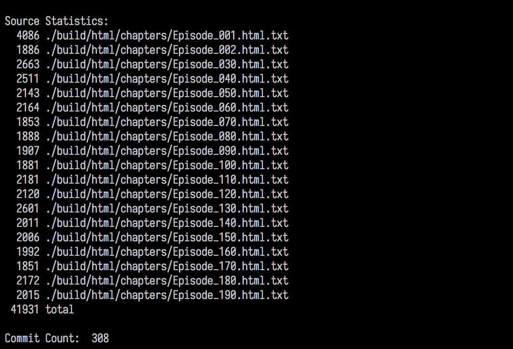
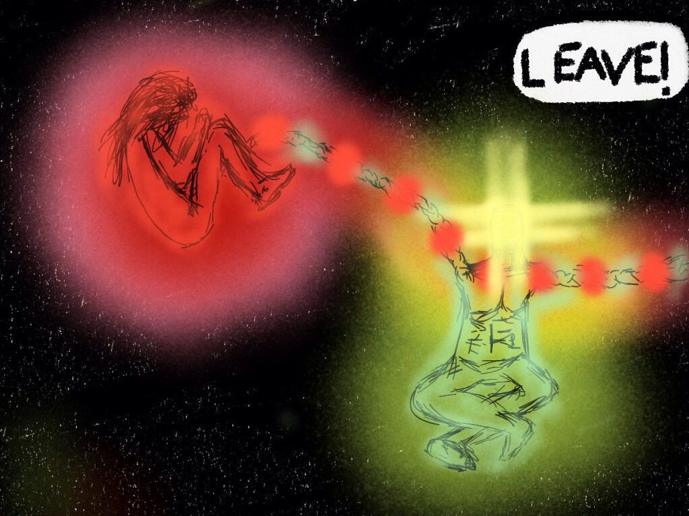

May 30, 2016 • No Comments
It’s finally happened! I’ve finally finished a “complete” rough draft for The Erasable Man!

The story has been percolating in the back of my mind for 3 years 8 months and 12 days and I’ve finally put a closing chapter on this monster. Of course, that doesn’t mean that there’s anything in particular I can release for general consumption just yet! What I’ve got is a rough, and I do mean rough, draft of the something that might have some passing resemblance to an interesting story.
So, the next thing on my plate is to take a step back and get out the green editing pen. Not tonight of course, but soon!
Posted in The Erasable Man, Writings - Fiction
May 16, 2014 • No Comments
Chapter 8 is finally out the door! I was worried there for a bit when my favorite coffee shop decided to up and close almost over night, throwing me completely off my game. (By the way, if anyone knows of a decent coffee shop, not Star Bucks, in the North Austin/Round Rock area, I’m still looking.)
Without further ado: The Erasable Man – Episode 8 – Death’s Door
Posted in The Erasable Man, Writings - Fiction
April 13, 2014 • No Comments
Things are starting to get a little weird in Pocketville, and as they say, with enemies like these, who needs friends! Here’s a little teaser I cooked up in my not so copious amounts of spare time:

It’s not the best, but I’m a writer not a graphic artist. So, head on over to JukePop and get started on Episode 7!
UPDATE: I decided to sweeten the deal this month by running deals on both A Thousand Cuts and That Which is Nameless. Starting April 15th, A Thousand Cuts is free for the rest of the week and starting April 16th, the ebook of That Which is Nameless will be discounted to .99 cents in a count down deal! If you don’t have a copy, go grab one!
Posted in The Erasable Man, Writings - Fiction
March 12, 2014 • No Comments
And there you have it folks, the most recent episode of The Erasable Man – Old Wounds is live on JukePop! My editor thought this chapter was the most fun yet, let me know what you think.
Posted in The Erasable Man, Writings - Fiction
March 2, 2014 • No Comments
I finally had a chance to sit down and go work through the feedback from my editor and work in a few other things I noticed here and there. (Incidentally, you also might want to checkout What Happened On My Space Vacation it’s targeted at a more young adult audience but is well worth the read.) Without further ado, here’s that teaser promised in the title:
The temperature in the room started rising as their tempers flared hotter. It wouldn’t be long before I had to take drastic measures.
“Ladies …”
“Why would you give them to an asshole like him?”
“Aden! He’s not an asshole. He’s … he’s none of your business!”
“Ladies …” A bead of sweat dripped down the side of my face as more and more heat rolled off the pair. Papers at the edge of my desk were starting to smoke. If they kept this up, I’d need a new desk, not to mention a new chair, and a new office. The least of my troubles would be another visit with Sheridan. I grabbed a fire extinguisher from the kitchen.
“Who is this asshole? You never tell me anything any…”
“Why should I tell you? It’s not like you care about…”
If all goes well, I’ll have the full episode posted within the next couple of days and the Episode 7 off to the editor shortly there after. Now, if only I could find a few moments to rebuild that buffer of episodes again!
Posted in The Erasable Man, Writings - Fiction
Tags: The Erasable Man
February 13, 2014 • No Comments
I picked this up at the Austin PHP meetup:
Posted in Programming, Random Thoughts
February 9, 2014 • No Comments
And there you have it, episode 5 of The Erasable Man is live over at Juke Pop! Unfortunately for me, that means I’ve burned through my cushion again and really, really need to get back to actually doing some writing. Also, for those of you out there who don’t have it yet, That Which is Namless will be free starting on the 12th and running through the 14th.
As always, keep reading!
Posted in The Erasable Man, Writings - Fiction
Tags: The Erasable Man
December 18, 2013 • No Comments
That’s right! You can now read Chapter 3 of the Erasable Man over at JukePop Serials (Which I’ve helpfully linked right there!). Things slowed down for a bit with the move earlier in the year. But, thankfully, daily life is starting to return to some degree of normalcy, and the new apartment has a stable internet connection! Let me know what you think! I’m always interested in feed back; there isn’t any other way to get better to tell the truth.
Posted in The Erasable Man, Writings - Fiction
Tags: The Erasable Man
December 15, 2013 • No Comments
They didn’t quite brown as well as I would have liked and the seeds keep coming off. The browning issue is probably from using too much water to steam the oven, I’ll have to try a little less next time to see if that helps.
If you’re interested in giving the recipe a try, take a look at Sourdough Home. I’ve been doing a bit of reading from their site and have my own starter bubbling away (you can see it in the upper left corner there).
Posted in Random Thoughts, Uncategorized
Tags: cooking, kaiser rolls, sourdough
December 2, 2013 • No Comments
 How to Live Safely in a Science Fictional Universe by Charles Yu
How to Live Safely in a Science Fictional Universe by Charles Yu
My rating: 3 of 5 stars
I originally started reading this book several months back and had to set it aside due entirely to external factors. At the time, it looked like the text was off to a good start. So, when I picked it up this time, I had high hopes only to see it come crashing down under the weight of gratuitous prose. The story centers around a character, named suspiciously the same as the author, who repairs time machines and hopes to one day locate his lost father, an uncredited co-discoverer of the theory behind time machines. Unfortunately, that’s the entire plot right then and there. More than half the book is exposition about the narrator’s past and just how bad that past was, or rather, mediocre it was.
On top of the near complete lack of story, the prose drove me nuts. Yu likes big words and uses them throughout the text without caring if there is anything to warrant their usage. It seems his overall goal is to add academic weight by the sheer mass of verbiage he uses.
There are numerous points where ideas are drawn out so far past the point of interest that I found it difficult to not skim over them to find the next interesting bit. It’s almost as if the entire point of 75% of the text is for the main character to whine about wallowing in self pity.
Overall, Yu attempts to invoke the whimsical nature of Douglas Adams with a dash of Pratchett on the side and fails miserably. If I could make one suggestion to the author, cut out about 20~30 percent of what’s there in the next draft!
View all my reviews
Posted in Reading - The Other Half of Writing


{kind=link}
{kind=link}
{kind=link}